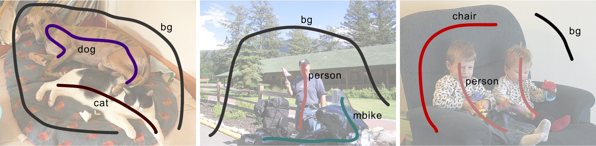
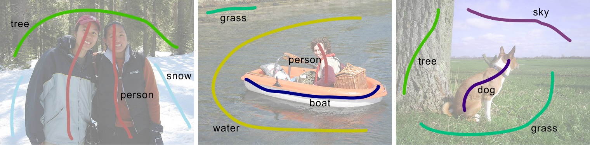
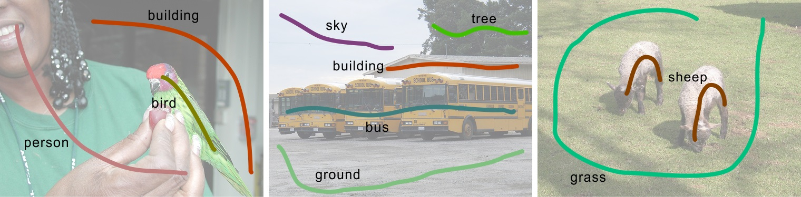

Di Lin, Jifeng Dai, Jiaya Jia, Kaiming He, and Jian Sun
IEEE Conference on Computer Vision and Pattern Recognition (CVPR), 2016
[Scribble annotations]
Please download the original images from the PASCAL VOC website.
1The Chinese Univeristy of Hong Kong 2Microsoft Research
(*This work was done when Di Lin was an intern at Microsoft Research)
Introduction
Large-scale data is of crucial importance for learning semantic segmentation models, but annotating per-pixel masks is a tedious and inefficient procedure. We note that for the topic of interactive image segmentation, scribbles are very widely used in academic research and commercial software, and are recognized as one of the most user-friendly ways of interacting. In this paper, we propose to use scribbles to annotate images, and develop an algorithm to train convolutional networks for semantic segmentation supervised by scribbles. Our algorithm is based on a graphical model that jointly propagates information from scribbles to unmarked pixels and learns network parameters. We present competitive object semantic segmentation results on the PASCAL VOC dataset [1] by using scribbles as annotations. Scribbles are also favored for annotating stuff (e.g., water, sky, grass) that has no well-defined shape, and our method shows excellent results on the PASCAL-CONTEXT dataset [2] thanks to extra inexpensive scribble annotations.
PASCAL-Scribble Dataset
We provide scribble annotations on the PASCAL dataset [1]. Our annotations follow two different protocols. In the first protocol, we annotate the PASCAL VOC 2012 set that involves 20 object categories (aeroplane, bicycle, ...) and one background category. There are 12,031 images annotated, including 10,582 images in the training set and 1,449 images in the validation set. The following are examples of annotated scribbles on the PASCAL VOC 2012 set.
|  |
In the second protocol, we follow the 59 object/stuff categories and one background category involved in the PASCAL-CONTEXT dataset [2]. Besides the 20 object categories in the first protocol, there are 39 extra categories (snow, tree, ...) included. We follow this protocol to annotate the PASCAL-CONTEXT dataset. We have 4,998 images in the training set annotated. The following are examples of annotated scribbles on the PASCAL-CONTEXT dataset.
|  |
Using the second protocol, we further annotate the 9,963 images in the PASCAL VOC 2007 set. The following are examples of annotated scribbles on the PASCAL VOC 2007 set.
|  |
Downloads
|
"ScribbleSup: Scribble-Supervised Convolutional Networks for Semantic Segmentation" Di Lin, Jifeng Dai, Jiaya Jia, Kaiming He, and Jian Sun IEEE Conference on Computer Vision and Pattern Recognition (CVPR), 2016 [Scribble annotations] Please download the original images from the PASCAL VOC website. |
Reference
[1] M. Everingham, L. Van Gool, C. K. Williams, J. Winn, and A. Zisserman. The PASCAL Visual Object Classes (VOC) Challenge. IJCV, 2010.
[2] R. Mottaghi, X. Chen, X. Liu, N.-G. Cho, S.-W. Lee, S. Fidler, R. Urtasun, and A. Yuille. The role of context for object detection and semantic segmentation in the wild. In CVPR, 2014.